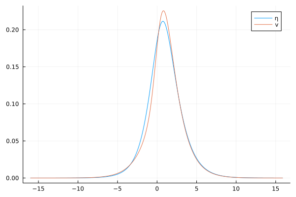
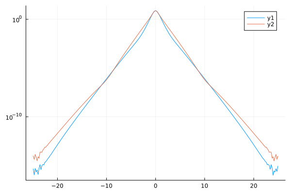
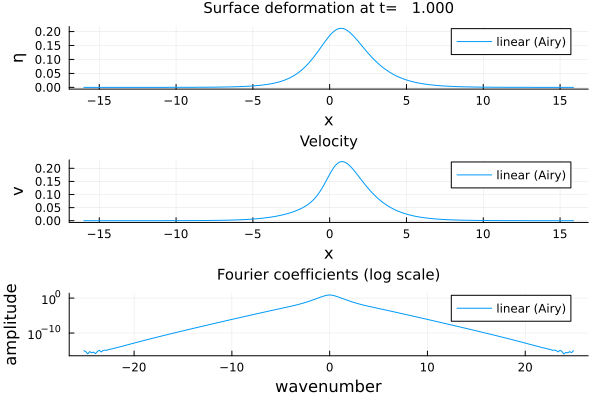

How to...
WaterWaves1D.jl is meant to be versatile, and integrating new blocks to the package is easy. If you ever do so, please do not hesitate to contact the developers to either get help, or report on your advances.
build your model
Let us add the linear (Airy) water waves model whose equations are (using the notations introduced here)
\[ \left\{\begin{array}{l} ∂_tη+\frac{\tanh(\sqrt{μ} D)}{ν\sqrt{μ} D}∂_xv=0,\\[1ex] ∂_tv+∂_xη=0, \end{array}\right.\]
where we use the notation $F(D)$ for the action of pointwise multiplying by the function $F$ in the Fourier space.
In a dedicated file we write
export Airy
mutable struct Airy <: AbstractModel
label :: String
f! :: Function
mapto :: Function
mapfro :: Function
# We build our model here.
endOur purpose is to provide
label, a string used in subsequent informational messages, plots, etc.f!, a function to be called in explicit time-integration solvers such asEulerorRK4(one may provide other functions to be used with other solvers such asEulerSymp)mapto, a function which from a couple(η,v)of typeInitialDataprovides the raw data matrix on which computations are to be executedmapfro, a function which from raw data returns(η,v,x)whereηis the values of surface deformation at collocation pointsx;vis the derivative of the trace of the velocity potential atx.
To this aim, in place of the commented line, we write
function Airy(param::NamedTuple; # param is a NamedTuple containing all necessary parameters
label = "linear (Airy)" # using a keyword argument allows the user to supersede the default label.
)
# Set up
μ = param.μ
if !in(:ν,keys(param)) # set default ν if it is not provided
ν = min(1,1/√μ)
else
ν = param.ν
end
# Collocation points and Fourier modes
m = Mesh(param)
x, k = m.x, m.k
# Fourier multipliers
∂ₓ = 1im * k # Differentiation
∂ₓF₁ = 1im * tanh.(√μ*k)/(√μ*ν)
# Pre-allocation
fftη = zeros(Complex{Float64}, m.N)
fftv = zeros(Complex{Float64}, m.N)
# Evolution equations are ∂t U = f(U)
function f!(U)
fftη .= U[1]
fftv .= U[2]
U[1] .= -∂ₓF₁.*fftv
U[2] .= -∂ₓ.*fftη
end
# Build raw data from physical data (discrete Fourier transform)
function mapto(data::InitialData)
U = [fft(data.η(x)) fft(data.v(x))]
end
# Return physical data `(η,v,x)` from raw data
function mapfro(U)
real(ifft(U[1])),real(ifft(U[2])),x
end
new( label, f!, mapto, mapfro )
endA useful tool used in the above was the function Mesh. It takes as argument a NamedTuple containing typically a number of points/modes and the (half-)size of the domain and provides the vector of collocations points and Fourier wavenumbers (see this discussion).
The Airy model can now be built as follows
using WaterWaves1D
# include your file
model = Airy((μ=1,L=2π,N=2^8))build your initial data
The simplest way to build an initial data is to use the function Init, which takes as argument either
- a function
ηand a functionv(in this order); - an array of collocation points and two vectors representing
η(x)andv(x)(in this order); - a
mesh(generated withMesh) and two vectors representingη(mesh.x)andv(mesh.x)(in this order).
Some relevant initial data (e.g. travelling waves) are built-in; see the library section. You can build your own in the following lines.
struct Heap <: InitialData
η
v
label :: String
info :: String
function Heap(L)
η=x->exp.(-(L*x).^2)
v=x->zero(x)
init = Init(η,v)
label = "Heap"
info = "Heap of water, with length L=$L."
new( init.η,init.v,label,info )
end
endThe corresponding initial data can now be built as follows
using WaterWaves1D
# include your file
init = Heap(1)build your time solver
As an example, let us review how the explicit Euler solver, Euler, is built.
In a dedicated file we write
struct Euler <: TimeSolver
U1 :: Array
label :: String
function Euler( U :: Array; realdata=nothing )
U1 = copy(U)
if realdata==true
U1 = real.(U1);
end
if realdata==false
U1 = complex.(U1);
end
new( U1, "Euler" )
end
endHere, Euler.U1 is a pre-allocated vector which can be used to speed-up calculations, and Euler-label is the string "Euler", used for future references. The optional keyword argument realdata allows to specify the type of data which the solver will take as arguments: either complex or real vectors.
We shall now add one method to the function step!, performing the explicit Euler step: that is replacing a vector U with U+dt*f(U) where f is provided by the model at stake.
export step!
function step!(solver :: Euler,
model :: AbstractModel,
U ,
dt )
solver.U1 .= U # allocate U to U1
model.f!( solver.U1 ) # model.f!(U) replaces its argument U with f(U)
U .+= dt .* solver.U1 # update U
endaccess to and manage your data
Once an initial-value problem problem has been solved (i.e. numerically integrated), the raw data is stored in problem.data.U, which is an array whose elements correspond (in chronological order) to values at the different computed times, problem.times.ts.
param = ( c = 1.1, ϵ = 1, μ = 1, N = 2^8, L = 16, T = 1, dt = 0.1)
init = SolitaryWhitham(param)
model = Airy(param)
problem = Problem( model, init, param )
solve!(problem; verbose=false)
problem.data.U11-element Vector{AbstractArray}:
Vector{ComplexF64}[[7.666279752905108 + 0.0im, -7.002608952054088 + 2.5479481718517273e-9im, 5.494478771973448 - 3.9984083689537435e-9im, -3.928590087904738 + 4.28833453214928e-9im, 2.688522660878885 - 3.91295198913035e-9im, -1.8119424679107876 + 3.296442846854112e-9im, 1.2194337862673603 - 2.6621993970258332e-9im, -0.8244860163977136 + 2.099965780538661e-9im, 0.5613249024834766 - 1.6339382208352404e-9im, -0.38503343648871835 + 1.2608772155415198e-9im … 0.2660449757608604 + 9.680245485015091e-10im, -0.38503343648871835 - 1.2608772079674155e-9im, 0.5613249024834766 + 1.6339382519674072e-9im, -0.8244860163977137 - 2.099965808141795e-9im, 1.2194337862673603 + 2.6621994408313018e-9im, -1.8119424679107876 - 3.2964427928071835e-9im, 2.688522660878885 + 3.912952013554051e-9im, -3.9285900879047375 - 4.288334760621974e-9im, 5.494478771973449 + 3.998408458723641e-9im, -7.002608952054088 - 2.5479481290623095e-9im], [7.418980406037189 + 0.0im, -6.762869498490983 + 2.460715962160613e-9im, 5.275526526412351 - 3.839074352956932e-9im, -3.738960446720007 + 4.081340153821951e-9im, 2.5313861114435485 - 3.684250483275008e-9im, -1.6861880580844621 + 3.067657167374307e-9im, 1.1214100168794154 - 2.4481972573717532e-9im, -0.7495384972661312 + 1.9090746377448404e-9im, 0.504806535583511 - 1.4694200023424031e-9im, -0.3428221541434223 + 1.1226452661894877e-9im … 0.2347265490926409 + 8.5406873184818e-10im, -0.3428221541434223 - 1.1226452911468962e-9im, 0.504806535583511 + 1.4694200344483437e-9im, -0.7495384972661312 - 1.9090746805251133e-9im, 1.1214100168794154 + 2.448197283949417e-9im, -1.6861880580844621 - 3.0676570740622e-9im, 2.5313861114435485 + 3.6842503986397103e-9im, -3.7389604467200073 - 4.081340266142731e-9im, 5.275526526412351 + 3.839074433673005e-9im, -6.762869498490982 - 2.4607158783645465e-9im]]
Vector{ComplexF64}[[7.666279752905108 + 0.0im, -7.001276215137731 + 0.13109975548514471im, 5.490447810332898 - 0.19709016866706208im, -3.92246836133484 + 0.19776710848974743im, 2.681601885897437 - 0.16586433187536453im, -1.8052418492286295 + 0.12695170006490833im, 1.2134992910191584 - 0.0925733275178955im, -0.8195065953858478 + 0.06580415404849135im, 0.5572863663168502 - 0.04618728376962014im, -0.381828753742927 + 0.03224842649928874im … 0.26353796979290767 + 0.022494578640526997im, -0.381828753742927 - 0.03224842649928873im, 0.5572863663168502 + 0.04618728376962017im, -0.8195065953858479 - 0.06580415404849138im, 1.2134992910191584 + 0.09257332751789556im, -1.8052418492286295 - 0.12695170006490827im, 2.681601885897437 + 0.16586433187536456im, -3.9224683613348397 - 0.19776710848974768im, 5.490447810332899 + 0.19709016866706217im, -7.001276215137731 - 0.13109975548514466im], [7.418980406037189 + 0.0im, -6.7615823887965 + 0.1374871846894821im, 5.2716561965685065 - 0.21571490903702117im, -3.7331342105428957 + 0.23129283100961046im, 2.524869836115899 - 0.21097481642528604im, -1.679952482948963 + 0.17766762632430527im, 1.1159525638822965 - 0.14342792444696878im, -0.7450117159986185 + 0.11309285570045892im, 0.5011746291458348 - 0.08796099953257364im, -0.3399688011940607 + 0.06785199175295863im … 0.23251466409490415 + 0.05207346801857508im, -0.3399688011940607 - 0.06785199175295865im, 0.5011746291458348 + 0.08796099953257366im, -0.7450117159986185 - 0.11309285570045899im, 1.1159525638822965 + 0.1434279244469688im, -1.679952482948963 - 0.1776676263243052im, 2.524869836115899 + 0.21097481642528595im, -3.733134210542896 - 0.23129283100961054im, 5.2716561965685065 + 0.2157149090370213im, -6.761582388796499 - 0.137487184689482im]]
Vector{ComplexF64}[[7.666279752905108 + 0.0im, -6.99727851178253 + 0.2621496065989485im, 5.478360840476999 - 0.3938911474404454im, -3.9041222620726495 + 0.3949178714120192im, 2.660875197348205 - 0.3308747264155145im, -1.7851895620191114 + 0.2529644543239612im, 1.1957535829299428 - 0.1842456178775118im, -0.8046284985683345 + 0.13081346758910864im, 0.5452288930610565 - 0.09170996325216149im, -0.3722680764056452 + 0.06396003616387347im … 0.256064225088432 + 0.04456521264789574im, -0.37226807640564513 - 0.06396003616387347im, 0.5452288930610564 + 0.09170996325216152im, -0.8046284985683346 - 0.13081346758910867im, 1.1957535829299428 + 0.18424561787751187im, -1.7851895620191114 - 0.25296445432396114im, 2.660875197348205 + 0.3308747264155145im, -3.904122262072649 - 0.3949178714120194im, 5.4783608404769994 + 0.3938911474404455im, -6.99727851178253 - 0.2621496065989485im], [7.418980406037189 + 0.0im, -6.757721549743839 + 0.27492203378319585im, 5.260050886428859 - 0.4311133006842671im, -3.7156736615565684 + 0.4618648337300068im, 2.505354563841447 - 0.420863449606411im, -1.661291886366263 + 0.354021208990579im, 1.0996333383649655 - 0.2854598341051138im, -0.7314860694509462 + 0.2248196780205699im, 0.49033119186026003 - 0.17465630044077357im, -0.3314562624435171 + 0.13457450073588176im … 0.2259207176056971 + 0.10316553352000482im, -0.3314562624435171 - 0.13457450073588179im, 0.49033119186026003 + 0.17465630044077357im, -0.7314860694509462 - 0.22481967802056996im, 1.0996333383649655 + 0.2854598341051138im, -1.661291886366263 - 0.35402120899057893im, 2.505354563841447 + 0.42086344960641087im, -3.715673661556569 - 0.46186483373000686im, 5.260050886428859 + 0.43111330068426723im, -6.757721549743838 - 0.2749220337831958im]]
Vector{ComplexF64}[[7.666279752905108 + 0.0im, -6.990617363674671 + 0.3930996730616719im, 5.458235597339905 - 0.5901141787536512im, -3.873608965741877 + 0.5908378727004111im, 2.6264493041884913 - 0.4941816508237917im, -1.7519339141826233 + 0.3771062687786013im, 1.1663693844083192 - 0.27412461040473685im, -0.7800314361006488 + 0.1942427066850642im, 0.5253259811409761 - 0.13591300253312733im, -0.3565105537568068 + 0.09460695274172769im … 0.24376459520674615 + 0.06579595128611399im, -0.35651055375680674 - 0.09460695274172769im, 0.525325981140976 + 0.13591300253312733im, -0.780031436100649 - 0.19424270668506421im, 1.1663693844083192 + 0.2741246104047369im, -1.7519339141826236 - 0.3771062687786012im, 2.6264493041884918 + 0.4941816508237917im, -3.8736089657418766 - 0.5908378727004113im, 5.458235597339906 + 0.5901141787536514im, -6.990617363674671 - 0.3930996730616719im], [7.418980406037189 + 0.0im, -6.751288450923144 + 0.4122522365279363im, 5.24072762419929 - 0.6458791296583017im, -3.686633215567042 + 0.6909974345936052im, 2.4729407667410004 - 0.6285853161572519im, -1.6303442832106902 + 0.5277564302223305im, 1.0726111785052939 - 0.42471330860896483im, -0.709124931747762 + 0.3338309402806633im, 0.4724322530415055 - 0.25883842320183614im, -0.3174262396106935 + 0.1990568524397095im … 0.21506898211085482 + 0.15231329653276493im, -0.3174262396106935 - 0.1990568524397095im, 0.4724322530415055 + 0.25883842320183614im, -0.709124931747762 - 0.3338309402806634im, 1.0726111785052939 + 0.42471330860896483im, -1.6303442832106902 - 0.5277564302223305im, 2.4729407667410004 + 0.6285853161572518im, -3.6866332155670425 - 0.6909974345936052im, 5.24072762419929 + 0.6458791296583019im, -6.751288450923143 - 0.41225223652793624im]]
Vector{ComplexF64}[[7.666279752905108 + 0.0im, -6.9812953063142 + 0.5239001100276662im, 5.4301016102298965 - 0.7854713490508454im, -3.8310235670360187 + 0.7849165276690896im, 2.578501444127621 - 0.6549443385088767im, -1.7057208664041983 + 0.4984589837133457im, 1.1256326974394537 - 0.36133549627399697im, -0.7460125118093545 + 0.25532572075996796im, 0.49786401901468236 - 0.17816035273445013im, -0.33481848894381183 + 0.12367902183952227im … 0.22687088420106935 + 0.08578667188437722im, -0.3348184889438118 - 0.12367902183952227im, 0.49786401901468225 + 0.17816035273445013im, -0.7460125118093546 - 0.25532572075996796im, 1.1256326974394537 + 0.361335496273997im, -1.7057208664041985 - 0.49845898371334557im, 2.5785014441276215 + 0.6549443385088767im, -3.831023567036018 - 0.7849165276690898im, 5.430101610229897 + 0.7854713490508455im, -6.9812953063142 - 0.5239001100276662im], [7.418980406037189 + 0.0im, -6.742285541029758 + 0.5494255195423787im, 5.213714762459864 - 0.8596972749813387im, -3.6461033771294593 + 0.9179765418476876im, 2.4277953234812064 - 0.8330709843539842im, -1.5873385637360053 + 0.6975883347287397im, 1.0351490961175283 - 0.559832968185536im, -0.6781983993522781 + 0.43880991469708674im, 0.44773536542909165 - 0.33929604964383264im, -0.29811227950552666 + 0.26022566139251896im … 0.20016397403049443 + 0.1985904994011122im, -0.29811227950552666 - 0.26022566139251896im, 0.44773536542909165 + 0.33929604964383264im, -0.6781983993522781 - 0.43880991469708686im, 1.0351490961175283 + 0.559832968185536im, -1.5873385637360053 - 0.6975883347287397im, 2.4277953234812064 + 0.8330709843539841im, -3.6461033771294598 - 0.9179765418476875im, 5.213714762459864 + 0.8596972749813389im, -6.742285541029757 - 0.5494255195423786im]]
Vector{ComplexF64}[[7.666279752905108 + 0.0im, -6.969315888049911 + 0.6545011296062687im, 5.394000159501702 - 0.9796760152342269im, -3.7764987833557258 + 0.9765489901883052im, 2.5172784711391984 - 0.8123351215861563im, -1.6468922130141317 + 0.61612506775219im, 1.0739400198734317 - 0.44502943584624205im, -0.7029826345243964 + 0.3133246988952907im, 0.46323816425137454 - 0.2178441059189949im, -0.30755297262631487 + 0.15069230431041444im … 0.20570147794080262 + 0.10416062167093025im, -0.3075529726263148 - 0.15069230431041444im, 0.46323816425137443 + 0.2178441059189949im, -0.7029826345243965 - 0.3133246988952907im, 1.0739400198734317 + 0.4450294358462421im, -1.646892213014132 - 0.6161250677521899im, 2.517278471139199 + 0.8123351215861563im, -3.7764987833557253 - 0.9765489901883054im, 5.394000159501703 + 0.979676015234227im, -6.969315888049911 - 0.6545011296062687im], [7.418980406037189 + 0.0im, -6.730716246932153 + 0.6863896691751392im, 5.179051936563736 - 1.0722540061901031im, -3.594210457490626 + 1.1420947751026962im, 2.370150660119133 - 1.0332676836634251im, -1.5325928006899137 + 0.8622608363726068im, 0.9876117167083478 - 0.6895036682640509im, -0.6390800286160144 + 0.5384885788136224im, 0.4165958991903366 - 0.4148714543831814im, -0.27383588635802136 + 0.31706270006057546im … 0.18148659931562341 + 0.24112498424739404im, -0.27383588635802136 - 0.3170627000605754im, 0.4165958991903366 + 0.4148714543831814im, -0.6390800286160144 - 0.5384885788136226im, 0.9876117167083478 + 0.6895036682640509im, -1.5325928006899137 - 0.8622608363726068im, 2.370150660119133 + 1.0332676836634251im, -3.5942104574906266 - 1.142094775102696im, 5.179051936563736 + 1.0722540061901034im, -6.730716246932152 - 0.6863896691751392im]]
Vector{ComplexF64}[[7.666279752905108 + 0.0im, -6.954683668728705 + 0.7848530198130697im, 5.349984215986776 - 1.172443225248875im, -3.7102045411950093 + 1.1651380376873608im, 2.4430955845621725 - 0.9655436920289711im, -1.5758830540576707 + 0.729234256050192im, 1.0117944862369712 - 0.524391820581729im, -0.651461554780877 + 0.367539081717895im, 0.421946657502689 - 0.2543932424334875im, -0.2751678721853845 + 0.17519713199638448im … 0.1806553436796638 + 0.12057151820000414im, -0.27516787218538447 - 0.17519713199638448im, 0.4219466575026889 + 0.2543932424334875im, -0.6514615547808771 - 0.367539081717895im, 1.0117944862369712 + 0.524391820581729im, -1.575883054057671 - 0.7292342560501919im, 2.443095584562173 + 0.9655436920289711im, -3.710204541195009 - 1.165138037687361im, 5.349984215986777 + 1.1724432252488752im, -6.954683668728705 - 0.7848530198130697im], [7.418980406037189 + 0.0im, -6.716584972367529 + 0.8230925513793843im, 5.136790006481111 - 1.2832374436653484im, -3.531116180939995 + 1.3626536698832228im, 2.3003035534837832 - 1.2281447248089257im, -1.4665118968299287 + 1.0205560082527354im, 0.9304617305081032 - 0.8124633000206413im, -0.5922423236548405 + 0.6316629317203627im, 0.37946192840330906 - 0.48447716363156335im, -0.24500116999141908 + 0.36862184845595447im … 0.15938885937832845 + 0.2791151299932252im, -0.24500116999141908 - 0.3686218484559544im, 0.37946192840330906 + 0.48447716363156335im, -0.5922423236548405 - 0.6316629317203628im, 0.9304617305081032 + 0.8124633000206413im, -1.4665118968299287 - 1.0205560082527354im, 2.3003035534837832 + 1.2281447248089257im, -3.5311161809399954 - 1.3626536698832226im, 5.136790006481111 + 1.2832374436653486im, -6.716584972367528 - 0.8230925513793843im]]
Vector{ComplexF64}[[7.666279752905108 + 0.0im, -6.937404217959926 + 0.914906163492287im, 5.298118363270417 - 1.3634901361863674im, -3.632347446565304 + 1.3500959323987571im, 2.3563347063337856 - 1.1137812734446573im, -1.49321857727049 + 0.8369499868202459im, 0.9398009706307033 - 0.5986502017750818im, -0.5920715868411537 + 0.417314023332488im, 0.37458365318518694 - 0.28728184745605007im, -0.23820227655391862 + 0.19678559298859066im … 0.1522045109563051 + 0.1347100755224894im, -0.23820227655391857 - 0.19678559298859066im, 0.3745836531851868 + 0.28728184745605007im, -0.5920715868411538 - 0.417314023332488im, 0.9398009706307033 + 0.5986502017750818im, -1.4932185772704902 - 0.8369499868202458im, 2.356334706333786 + 1.1137812734446573im, -3.632347446565303 - 1.3500959323987574im, 5.298118363270418 + 1.3634901361863676im, -6.937404217959926 - 0.914906163492287im], [7.418980406037189 + 0.0im, -6.699897096265571 + 0.9594821315571391im, 5.08699098217357 - 1.4923380162456725im, -3.4570171807958987 + 1.578965854392551im, 2.2186136032551897 - 1.4166988061534853im, -1.3895845902396946 + 1.1713030905584425im, 0.8642553890200185 - 0.9275150747161527im, -0.5382510290524982 + 0.7172075369672201im, 0.3368677835995115 - 0.5471116031338241im, -0.21208811892713372 + 0.41404484342701375im … 0.13428721712977593 + 0.31184496001520845im, -0.21208811892713372 - 0.41404484342701364im, 0.3368677835995115 + 0.547111603133824im, -0.5382510290524982 - 0.7172075369672202im, 0.8642553890200185 + 0.9275150747161527im, -1.3895845902396946 - 1.1713030905584425im, 2.2186136032551897 + 1.4166988061534855im, -3.457017180795899 - 1.5789658543925509im, 5.08699098217357 + 1.4923380162456727im, -6.69989709626557 - 0.9594821315571391im]]
Vector{ComplexF64}[[7.666279752905108 + 0.0im, -6.9174841129953455 + 1.0446110572030451im, 5.238478702929747 - 1.5525364292936958im, -3.5431701411078143 + 1.5308462530429479im, 2.2574425147090365 - 1.2562846819974822im, -1.3995101737606435 + 0.9384755885901404im, 0.8586601993764329 - 0.6670818089407894im, -0.5255300918678805 + 0.4620483010888131im, 0.32183067003523785 - 0.31603667851834394im, -0.19727152243321863 + 0.21509832180469707im … 0.12088517553542294 + 0.14630983310565082im, -0.1972715224332186 - 0.21509832180469707im, 0.32183067003523774 + 0.31603667851834394im, -0.5255300918678805 - 0.4620483010888131im, 0.8586601993764329 + 0.6670818089407894im, -1.3995101737606437 - 0.9384755885901404im, 2.257442514709037 + 1.2562846819974822im, -3.5431701411078134 - 1.5308462530429483im, 5.238478702929748 + 1.552536429293696im, -6.9174841129953455 - 1.0446110572030451im], [7.418980406037189 + 0.0im, -6.680658970701013 + 1.0955064943657415im, 5.029727932608275 - 1.699248915454187im, -3.3721443865977982 + 1.7903571917068648im, 2.1255013806074126 - 1.5979591790808im, -1.3023798395946156 + 1.3133871495736082im, 0.789637090920286 - 1.0335391722613338im, -0.477758296329063 + 0.7940891165107987im, 0.28942636314047593 - 0.6018735100746898im, -0.1756446103987307 + 0.4525755654660769im … 0.10665474815237391 + 0.33869763571057354im, -0.1756446103987307 - 0.4525755654660768im, 0.28942636314047593 + 0.6018735100746897im, -0.477758296329063 - 0.7940891165107988im, 0.789637090920286 + 1.0335391722613338im, -1.3023798395946156 - 1.3133871495736082im, 2.1255013806074126 + 1.5979591790808003im, -3.3721443865977987 - 1.7903571917068646im, 5.029727932608275 + 1.6992489154541872im, -6.680658970701012 - 1.0955064943657415im]]
Vector{ComplexF64}[[7.666279752905108 + 0.0im, -6.8949309362256 + 1.1739183300623695im, 5.171152742871616 - 1.739304721278547im, -3.4429505459008225 + 1.70682569124526im, 2.146928144589819 - 1.3923202555712872im, -1.2954509161256282 + 1.033060172428607im, 0.7691619307170894 - 0.7290205846713093im, -0.45264081304245396 + 0.5012015776429093im, 0.2644467845565276 - 0.34024397511131854im, -0.15305695127513752 + 0.22983048145262241im … 0.0872875940480703 + 0.15515217764786335im, -0.1530569512751375 - 0.22983048145262241im, 0.2644467845565275 + 0.34024397511131854im, -0.4526408130424539 - 0.5012015776429093im, 0.7691619307170894 + 0.7290205846713093im, -1.2954509161256285 - 1.033060172428607im, 2.1469281445898196 + 1.3923202555712872im, -3.4429505459008216 - 1.7068256912452604im, 5.171152742871617 + 1.7393047212785473im, -6.8949309362256 - 1.1739183300623695im], [7.418980406037189 + 0.0im, -6.658877918475787 + 1.2311138634789036im, 4.96508487854555 - 1.9036665456715616im, -3.2767623044143552 + 1.996168880722973im, 2.021446262946939 - 1.77099264578088im, -1.2055426161115719 + 1.445757323787793im, 0.7073331100055025 - 1.129503640631779im, -0.4114948067153976 + 0.8613790314957585im, 0.23782031406190773 - 0.6479749015777059im, -0.1362772902778725 + 0.48357262521347755im … 0.07701222492826784 + 0.35916708166790384im, -0.1362772902778725 - 0.48357262521347744im, 0.23782031406190773 + 0.6479749015777057im, -0.4114948067153976 - 0.8613790314957586im, 0.7073331100055025 + 1.129503640631779im, -1.2055426161115719 - 1.445757323787793im, 2.021446262946939 + 1.7709926457808802im, -3.2767623044143557 - 1.9961688807229727im, 4.96508487854555 + 1.9036665456715618im, -6.6588779184757865 - 1.2311138634789036im]]
Vector{ComplexF64}[[7.666279752905108 + 0.0im, -6.869753272294022 + 1.3027787625377236im, 5.096239268934253 - 1.9235209713074484im, -3.33200099531863 + 1.8774858070864444im, 2.025360566303327 - 1.5211876309430032im, -1.1818104324486598 + 1.12000418556113im, 0.6721772679526185 - 0.7838636674962101im, -0.3742841672904716 + 0.5343009275952939im, 0.20325770846925556 - 0.3595554123894247im, -0.10629456753712566 + 0.2407368378021793im … 0.05204495978081968 + 0.16107046314537246im, -0.10629456753712564 - 0.2407368378021793im, 0.20325770846925545 + 0.3595554123894247im, -0.37428416729047154 - 0.5343009275952939im, 0.6721772679526185 + 0.7838636674962101im, -1.18181043244866 - 1.12000418556113im, 2.0253605663033274 + 1.5211876309430032im, -3.332000995318629 - 1.8774858070864449im, 5.096239268934254 + 1.9235209713074486im, -6.869753272294022 - 1.3027787625377236im], [7.418980406037189 + 0.0im, -6.634562230331669 + 1.3662526212948567im, 4.893156669257143 - 2.105290969594917im, -3.171168192510251 + 2.1957595093119497im, 1.906983965894078 - 1.9349083637097257im, -1.099789133305699 + 1.567434596125732im, 0.618144526234504 - 1.214474440046614im, -0.3402609453812435 + 0.9182644991175375im, 0.18279220928653395 - 0.6847524131893814im, -0.09464147472680882 + 0.5065200401407075im … 0.04591830215436317 + 0.37286752335064133im, -0.09464147472680882 - 0.5065200401407074im, 0.18279220928653395 + 0.6847524131893812im, -0.3402609453812435 - 0.9182644991175376im, 0.618144526234504 + 1.214474440046614im, -1.099789133305699 - 1.567434596125732im, 1.906983965894078 + 1.934908363709726im, -3.1711681925102515 - 2.1957595093119493im, 4.893156669257143 + 2.1052909695949173im, -6.634562230331668 - 1.3662526212948567im]]Physical data (say at final computed time) can be reconstructed using the model as follows:
η,v,x = problem.model.mapfro(last(problem.data.U))([1.3452999706925484e-5, 1.2648564822109742e-5, 1.1943588073548561e-5, 1.1332528170621137e-5, 1.081058232824117e-5, 1.0373648571218586e-5, 1.0018293550059787e-5, 9.741725618517272e-6, 9.541772960947048e-6, 9.4168666037453e-6 … 2.882170424055872e-5, 2.6515672495059706e-5, 2.4418100230207823e-5, 2.2512500854929285e-5, 2.0783896173305616e-5, 1.9218698806965084e-5, 1.7804605523853018e-5, 1.653050064017239e-5, 1.5386368739392364e-5, 1.436321602723764e-5], [1.3452888219009362e-5, 1.2797168146588822e-5, 1.2242070555210094e-5, 1.1783230469991635e-5, 1.1417039629257886e-5, 1.114061811510747e-5, 1.0951791690416712e-5, 1.0849074692023675e-5, 1.0831658321108772e-5, 1.0899404251002442e-5 … 2.713429311568087e-5, 2.503262306819895e-5, 2.3127772713633487e-5, 2.1404766900439895e-5, 1.9850059768646705e-5, 1.8451428328175937e-5, 1.7197876434071196e-5, 1.6079548373168495e-5, 1.508765143203028e-5, 1.4214386786576966e-5], [-16.0, -15.875, -15.75, -15.625, -15.5, -15.375, -15.25, -15.125, -15.0, -14.875 … 14.75, 14.875, 15.0, 15.125, 15.25, 15.375, 15.5, 15.625, 15.75, 15.875])where η and v are respectively the values of the surface deformation and of the derivative of the trace of the velocity potential at the surface, at collocation points x.
This procedure is carried out by the function solution, which allows in addition to perform some interpolations (making use of the otherwise helpful function interpolate).
η,v,x = solution(problem)([1.3452999706925484e-5, 1.2648564822109742e-5, 1.1943588073548561e-5, 1.1332528170621137e-5, 1.081058232824117e-5, 1.0373648571218586e-5, 1.0018293550059787e-5, 9.741725618517272e-6, 9.541772960947048e-6, 9.4168666037453e-6 … 2.882170424055872e-5, 2.6515672495059706e-5, 2.4418100230207823e-5, 2.2512500854929285e-5, 2.0783896173305616e-5, 1.9218698806965084e-5, 1.7804605523853018e-5, 1.653050064017239e-5, 1.5386368739392364e-5, 1.436321602723764e-5], [1.3452888219009362e-5, 1.2797168146588822e-5, 1.2242070555210094e-5, 1.1783230469991635e-5, 1.1417039629257886e-5, 1.114061811510747e-5, 1.0951791690416712e-5, 1.0849074692023675e-5, 1.0831658321108772e-5, 1.0899404251002442e-5 … 2.713429311568087e-5, 2.503262306819895e-5, 2.3127772713633487e-5, 2.1404766900439895e-5, 1.9850059768646705e-5, 1.8451428328175937e-5, 1.7197876434071196e-5, 1.6079548373168495e-5, 1.508765143203028e-5, 1.4214386786576966e-5], [-16.0, -15.875, -15.75, -15.625, -15.5, -15.375, -15.25, -15.125, -15.0, -14.875 … 14.75, 14.875, 15.0, 15.125, 15.25, 15.375, 15.5, 15.625, 15.75, 15.875], 1.0)Using (η,v,x) one can compute other quantities such as the mass, momentum, energy; for instance for the purpose of testing how well these quantities are numerically perserved (when the quantities are first integrals of the considered model). Built-in functions mass, momentum, energy (and mass_diff, momentum_diff, energy_diff) compute such quantities (or their variation).
plot your data
Once (η,v,x) is obtained as above, producing plots is as simple as
using Plots
plot(x, [ η v ], label = ["η" "v"])
One can also plot the amplitude of discrete Fourier coefficients (in semi-log scale) as follows:
using FFTW
k=fftshift(Mesh(x).k);fftη=fftshift(fft(η));fftv=fftshift(fft(v));
indices = (fftη .!=0) .& (fftv .!=0 )
plot(k[indices], [ abs.(fftη)[indices] abs.(fftv)[indices] ], yscale=:log10)
Built-in plot recipes provide convenient ways of producing such plots, and animations.
plot(problem;var=[:surface,:velocity,:fourier])
save and load your data
Thanks to the package HDF5.jl it is possible to save (raw) data to a local file, and then load them for future analyses.
Built-in functions ease the process. Here is a typical example.
Build and solve a problem.
param = ( c = 1.1, ϵ = 1, μ = 1, N = 2^8, L = 16, T = 1, dt = 0.1)
init = SolitaryWhitham(param)
model = Airy(param)
problem = Problem( model, init, param )
solve!(problem; verbose=false)
nothing[ Info: Converged : relative error 3.517149510517202e-15 in 4 stepsSave the initial data.
x = Mesh(param).x
dump("file_name", x, init)Save the time-integrated (raw) data.
dump("file_name", problem) # or dump("file_name", problem.data)Reconstruct the problem, without solving it.
loaded_init = load_init("file_name") # load initial data
new_problem = Problem( model, loaded_init, param ) # re-build problem
load_data!("file_name", new_problem) # incorporate time-integrated data
problem.data == new_problem.datatrue